6.2. CAN Module Migration
Migration Approach: Follow sequential migration for clear understanding of changes at each version. Each migration is organized by individual changes with description, old vs new comparison, and migration actions.
6.2.1. v03.00.00 (i.e release v01.04.00) from v02.00.00 (i.e release v01.03.00) Migration
6.2.1.1. Summary
Version v3.00.00 introduces fundamental architectural changes that shift from direct parameter configuration to centralized resource management:
Resource Allocator Introduction: Resource Allocator becomes mandatory for all CAN module configuration
Controller Name Updates: Controller naming convention changes from numeric (MCAN1, MCAN2) to alphabetic (MCANA, MCANB)
ISR Name Updates: Interrupt Service Routine names updated to match new controller naming pattern
PREREQUISITE: Complete Resource Allocator Setup before proceeding.
6.2.1.2. Change 1: Resource Allocator Introduction
6.2.1.2.1. Description
Resource Allocator becomes a mandatory architectural foundation, replacing direct parameter configuration with centralized resource management. This represents a fundamental shift in how CAN controllers are configured and referenced.
6.2.1.2.2. Old vs New Configuration
Previous Configuration (v02.00.00):
{kind=link}
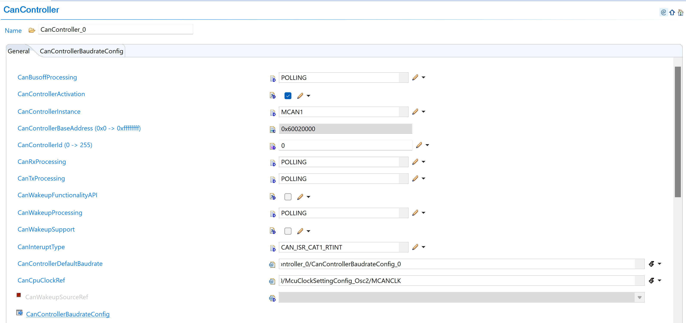
Fig. 6.4 v02.00.00: Direct controller parameter selection with CanControllerInstance as MCAN1 and CanControllerBaseAddress in hexadecimal format (0x60020000)
New Configuration (v03.00.00):
{kind=link}
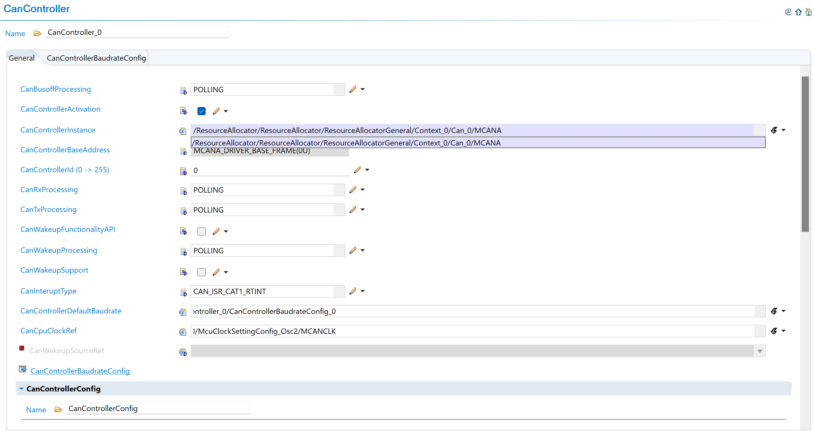
Fig. 6.5 v03.00.00: Select CAN instance from ResourceAllocator reference (MCANA, MCANB, etc.)
6.2.1.2.3. Migration Actions
Setup Resource Allocator: Follow Resource Allocator Setup
Navigate to Context: Navigate to ResourceAllocatorGeneral → Context → Can and add CAN allocator:
{kind=link}
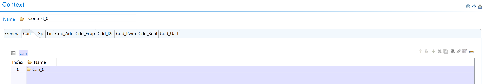
Fig. 6.6 Navigate to Context and add CAN allocator
Add CAN Instance: Add CanAllocatedInstance with new naming convention:
{kind=link}
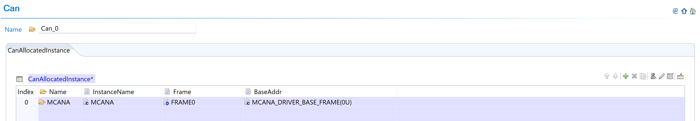
Fig. 6.7 Add CanAllocatedInstance with new naming (MCANA, MCANB, etc.)
Configure CAN Instance: Configure CAN instances with new controller names:
{kind=link}
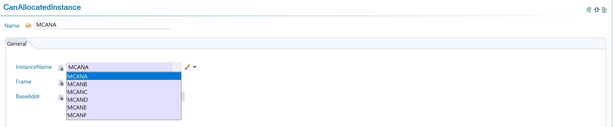
Fig. 6.8 Configure CAN instances with new controller names
Complete Configuration: Finalize CAN instance allocation:
{kind=link}
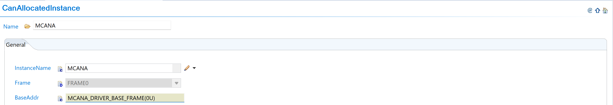
Fig. 6.9 Complete CAN instance allocation (MCANA, MCANB, MCANC)
Navigate to CanController: Navigate to Can → CanController and update configurations to reference the CAN instances allocated in Resource Allocator
Open Controller Configuration: Access the CanController configuration that needs to be updated
Set Instance Reference: Set CanControllerInstanceRef to point to the corresponding CanAllocatedInstance in Resource Allocator
Verify Automatic Derivation: Confirm that the CanControllerBaseAddress parameter is now automatically derived from the Resource Allocator reference
6.2.1.3. Change 2: Controller Name Updates
6.2.1.3.1. Description
Controller naming convention changes from numeric identifiers (MCAN1, MCAN2, etc.) to alphabetic identifiers (MCANA, MCANB, etc.) to align with Resource Allocator requirements and improve naming consistency.
6.2.1.3.2. Old vs New Names
Controller Name Mapping:
v02.00.00 |
v03.00.00 |
Hardware |
|---|---|---|
MCAN1 |
MCANA |
MCAN_A |
MCAN2 |
MCANB |
MCAN_B |
MCAN3 |
MCANC |
MCAN_C |
MCAN4 |
MCAND |
MCAN_D |
MCAN5 |
MCANE |
MCAN_E |
MCAN6 |
MCANF |
MCAN_F |
6.2.1.3.3. Migration Actions
No additional action required. Controller name updates are automatically handled when following the Resource Allocator setup steps in Change 1. The controller naming convention changes from numeric identifiers (MCAN1, MCAN2) to alphabetic identifiers (MCANA, MCANB) are applied automatically through the Resource Allocator configuration.
If you have used the old controller names in the application code, please change them to match the new naming convention.
6.2.1.4. Change 3: ISR Name Updates
6.2.1.4.1. Description of Change
Interrupt Service Routine (ISR) names are updated to match the new controller naming pattern, changing from numeric-based naming to alphabetic-based naming for consistency.
6.2.1.4.2. Old vs New ISR Names
ISR Name Mapping:
v02.00.00 ISR |
v03.00.00 ISR |
Type |
|---|---|---|
Can_1_Int1ISR |
Can_A_Int1ISR |
Interrupt 1 |
Can_1_WakeUpISR |
Can_A_WakeUpISR |
Wake-up |
Can_2_Int1ISR |
Can_B_Int1ISR |
Interrupt 1 |
Can_2_WakeUpISR |
Can_B_WakeUpISR |
Wake-up |
Naming Pattern: Can_{Number}_ → Can_{Letter}_
6.2.1.4.3. Migration Actions
Update Application Code: Search and replace ISR references in your application code following the new naming pattern
Update Interrupt Vector Table: Ensure interrupt vector table references use the new ISR names
Verify ISR Functionality: Test interrupt handling after migration to confirm proper operation
6.2.2. v02.00.00 (i.e release v01.03.00) from v01.01.00 (i.e release v01.02.00) Migration
6.2.2.1. Summary
Version v2.00.00 introduces redefinition of BASIC and FULL hardware object parameters with AUTOSAR-compliant constraints and behavior changes:
Hardware Object Parameter Redefinition: BASIC and FULL hardware object parameters are redefined with enforced AUTOSAR-compliant constraints and new memory limitations
Application Code Update: Configuration structure name change for AUTOSAR TPS_ECUC_08011 compliance
6.2.2.2. Change 1: Hardware Object Parameter Redefinition
6.2.2.2.1. Description
Version v2.00.00 redefines BASIC and FULL hardware object parameters with enforced AUTOSAR-compliant constraints. This change introduces specific hardware utilization patterns and memory constraints that were not enforced in previous versions.
6.2.2.2.2. Old vs New Parameter Definitions
CanHandleType Parameter Changes:
Handle Type |
v01.01.00 |
v02.00.00 |
|---|---|---|
FULL |
• Not used by driver |
• Hardware dedicated buffer is used |
BASIC |
• Not used by driver |
• For TRANSMIT messages, Tx FIFO is used |
CanHwObjectCount Parameter Changes:
Configuration |
v01.01.00 |
v02.00.00 |
|---|---|---|
CanHwObjectCount = 1 |
• Uses hardware dedicated buffer |
• Uses hardware dedicated buffer |
CanHwObjectCount > 1 |
• Uses hardware FIFO |
• Uses hardware FIFO |
Message RAM Memory Area Constraints:
Constraint |
v01.01.00 |
v02.00.00 |
|---|---|---|
Standard filters |
No constraint |
Maximum 128 (1 word each) |
Extended filters |
No constraint |
Maximum 64 (2 word each) |
Dedicated Tx buffers |
Maximum 32 |
Maximum 32 (4/18 word each) |
Tx FIFO |
No constraint on FIFO count |
Maximum 32 entries (4/18 word each entry) |
Dedicated Rx buffers |
Maximum 64 |
Maximum 64 (4/18 word each) |
Rx FIFO |
Maximum 64 entries |
Maximum 64 entries (4/18 word each) |
Total RAM area |
No constraint |
1024 words total for all components |
Message size |
Size varies |
4 words (CanFDMode enabled) |
Note
These constraints are added as per hardware capacity per controller so that EB Tresos can give error when wrong configurations are added. This helps to avoid message RAM memory overflow. Refer to TRM for details.
6.2.2.2.3. Migration Actions
Navigate to Hardware Objects: Navigate to Can → CanHardwareObject and add hardware object instances as needed for your application:
{kind=link}
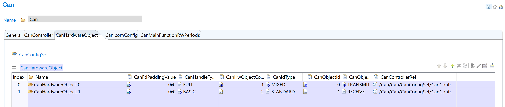
Fig. 6.10 Add hardware object instance for BASIC/FULL configuration
Configure CanHandleType: Configure each hardware object with appropriate CanHandleType (BASIC or FULL):
{kind=link}
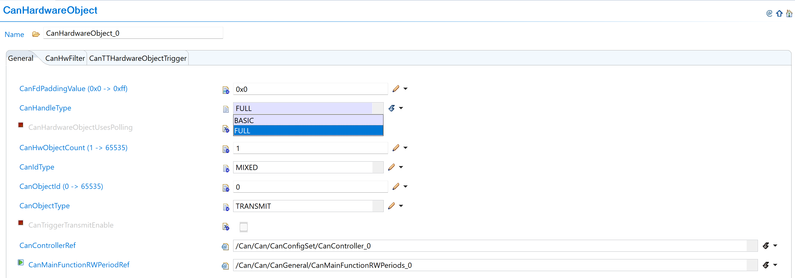
Fig. 6.11 Select BASIC or FULL object type with new constraint definitions
CanHandleType Configuration Guidelines:
Handle Type |
Configuration |
Hardware Usage |
|---|---|---|
FULL |
Use dedicated buffer in hardware |
Individual dedicated buffer per object |
BASIC |
Use FIFO in hardware |
Shared FIFO (1 Tx FIFO, 2 Rx FIFOs available) |
Hardware Limitations:
Maximum 1 Tx BASIC object
Maximum 2 Rx BASIC objects
Set CanHwObjectCount: Configure based on handle type:
Handle Type |
CanHwObjectCount |
Usage |
Limits |
|---|---|---|---|
FULL |
1 (recommended) |
Dedicated buffer |
- |
BASIC |
> 1 |
FIFO depth |
Tx FIFO: max 32 |
FIFO Usage Pattern:
TRANSMIT messages: Use Tx FIFO
RECEIVE messages: Use Rx FIFO
Multiple objects: Share combined FIFO depth
Configure Message Filters: Setup message filters within new RAM constraints:
{kind=link}
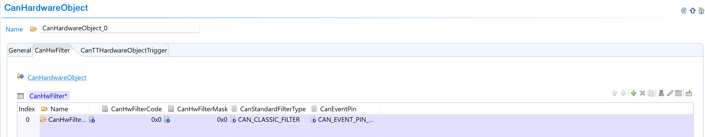
Fig. 6.12 Configure message filters with new RAM constraints
{kind=link}
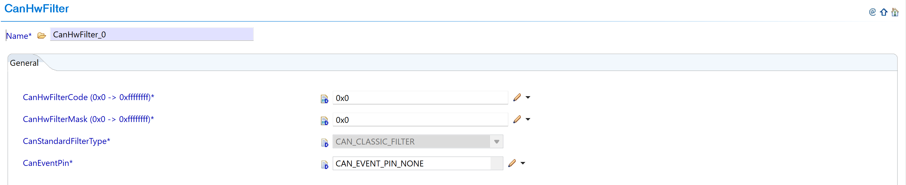
Fig. 6.13 Set filter parameters within new limits
Message RAM Memory Constraints to Follow:
Constraint Type |
Maximum Limit |
Word Size |
Action Required |
|---|---|---|---|
Standard filters |
128 filters |
1 word each |
Configure CanStandardObject within allowed limit. EB Tresos will prompt error if exceeded |
Extended filters |
64 filters |
2 words each |
Stay within limit during configuration |
Dedicated Tx buffers |
32 buffers |
4/18 words each |
Monitor total usage |
Tx FIFO entries |
32 entries total |
4/18 words each |
Combined FIFO and entries max: 32 |
Dedicated Rx buffers |
64 buffers |
4/18 words each |
Monitor total usage |
Rx FIFO entries |
64 entries max |
4/18 words each |
Max 2 Rx FIFOs, Max 2 entries per FIFO1 |
Total RAM area |
1024 words |
Combined total |
All components together must not exceed 1024 words |
Message Size Reference:
4 words if parameter CanFDMode is enabled
18 words if parameter CanFDMode is disabled
Verify All Constraints: Ensure all configurations stay within the new memory limits to avoid EB Tresos configuration errors and message RAM memory overflow. Refer to TRM for additional details.
6.2.2.3. Change 2: Application Code Update
6.2.2.3.1. Description
Version v2.00.00 changes the configuration structure name for AUTOSAR TPS_ECUC_08011 compliance, requiring updates to application code that references the CAN configuration structure.
6.2.2.3.2. Old vs New Configuration Structure
Configuration Structure Name Mapping:
v01.01.00 |
v02.00.00 |
|---|---|
|
|
Code Examples:
// v01.01.00
Can_Init(&Can_CanConfigSet);
// v02.00.00
Can_Init(&Can_Config);
6.2.2.3.3. Migration Actions
Search Application Code: Find all references to
Can_CanConfigSetin your application codeReplace Structure Name: Update all references from
Can_CanConfigSettoCan_ConfigUpdate Function Calls: Ensure all CAN initialization calls use the new structure name
Verify Compilation: Clean build and verify no compilation errors related to CAN configuration structure
6.2.3. v01.01.00 (i.e release v01.02.00) from v01.00.01 (i.e release v01.01.00) Migration
6.2.3.1. Summary
Version v01.01.00 introduces a clock reference parameter update to remove dependency between CAN and OS modules for timeout calculation:
Clock Reference Parameter Update: CanOsCounterRef parameter replaced with CanSysClockRef to eliminate CAN-OS module dependency
6.2.3.2. Change 1: Clock Reference Parameter Update
6.2.3.2.1. Description
The CanOsCounterRef parameter used as tick reference to calculate CAN_CFG_TIMEOUT_DURATION is replaced with CanSysClockRef. This change removes dependency between CAN and OS modules by referencing the system clock directly from MCU instead of OS counter.
6.2.3.2.2. Old vs New Clock Configuration
Parameter Name Change:
v01.00.01 |
v01.01.00 |
|---|---|
|
|
Previous Configuration (v01.00.01):
{kind=link}
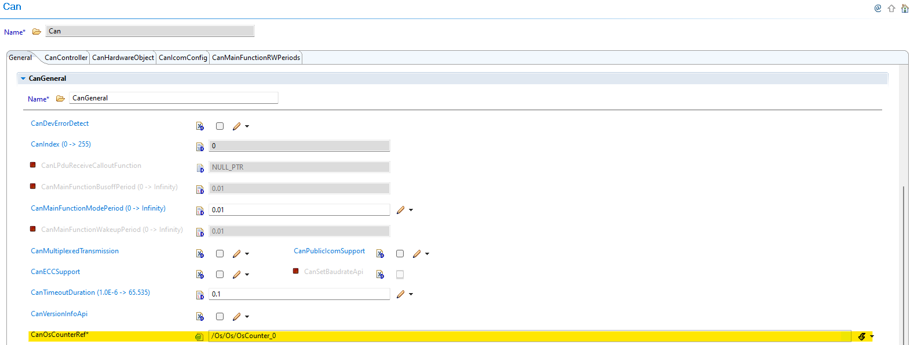
Fig. 6.14 v01.00.01: CanOsCounterRef parameter used as tick reference for timeout calculation
New Configuration (v01.01.00):
{kind=link}
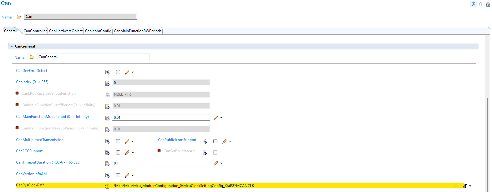
Fig. 6.15 v01.01.00: CanSysClockRef parameter references MCU system clock directly
6.2.3.2.3. Migration Actions
Navigate to CAN Configuration: Open CAN module configuration in EB Tresos
Remove OS Counter Dependency: The CanOsCounterRef parameter is no longer available in the GUI
Configure System Clock Reference: Use the new CanSysClockRef parameter to refer to system clock in MCU module
Verify Clock Frequency: Ensure the clock frequency matches your MCU system clock configuration
Update Timeout Calculation: CAN_CFG_TIMEOUT_DURATION is now calculated based on the MCU system clock frequency
Benefits: This change eliminates dependency between CAN and OS modules, provides more direct and reliable timeout calculation based on system clock, and simplifies configuration by using MCU system clock directly.